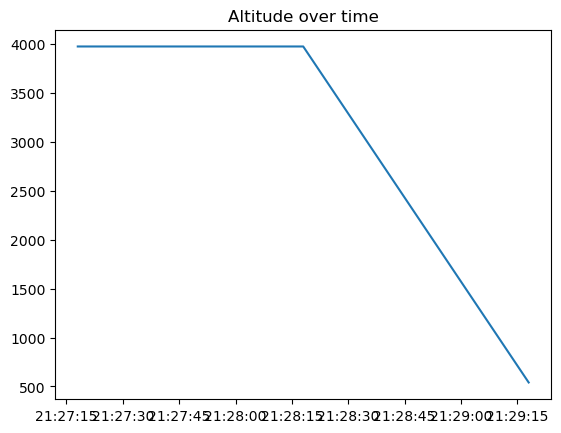
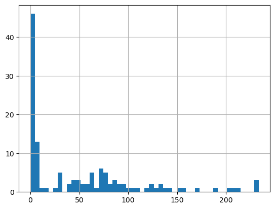
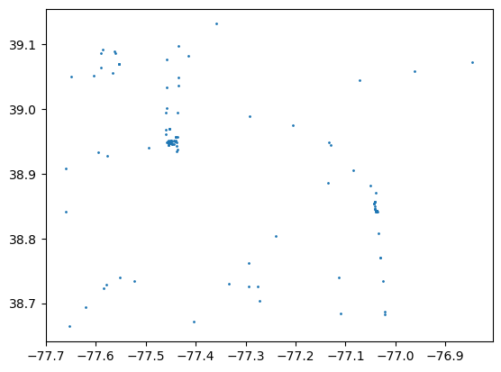

from pathlib import Path
import pandas as pd
BASE_DIR = Path.cwd()
file_path = BASE_DIR / ".." / ".." / "data" / "iad_dca_states_smoketest.parquet"
df = pd.read_parquet(file_path)
# Convert to datetime
df["snapshot_time"] = pd.to_datetime(df["snapshot_time"], utc=True)
# Sort first
df = df.sort_values(["icao24", "snapshot_time"])
# Remove duplicates while snapshot_time is still a column
df = df.drop_duplicates(subset=["icao24", "snapshot_time"])
# NOW set index
df = df.set_index("snapshot_time")
df = df.ffill()
df = df[df["velocity"] >= 0]
df = df[df["geo_altitude"] >= 0]
# 10-second digital twin dataset
df_resampled = (
df.groupby("icao24")
.resample("10s")
.agg({
"latitude": "mean",
"longitude": "mean",
"velocity": "mean",
"geo_altitude": "mean",
"vertical_rate": "mean",
"true_track": "mean"
})
.reset_index()
)
# 1-minute ML dataset
df_minute = (
df.groupby("icao24")
.resample("1min")
.agg({
"velocity": "mean",
"geo_altitude": "mean",
"vertical_rate": "mean"
})
.reset_index()
)
print(df_resampled.head())
print(df_minute.head()) icao24 snapshot_time latitude longitude velocity \
0 a01097 2026-02-16 21:27:10+00:00 39.0827 -77.4145 158.41
1 a0b845 2026-02-16 21:27:10+00:00 38.8418 -77.0379 0.00
2 a0b845 2026-02-16 21:27:20+00:00 NaN NaN NaN
3 a0b845 2026-02-16 21:27:30+00:00 NaN NaN NaN
4 a0b845 2026-02-16 21:27:40+00:00 NaN NaN NaN
geo_altitude vertical_rate true_track
0 3970.02 6.83 337.27
1 3970.02 6.83 101.25
2 NaN NaN NaN
3 NaN NaN NaN
4 NaN NaN NaN
icao24 snapshot_time velocity geo_altitude vertical_rate
0 a01097 2026-02-16 21:27:00+00:00 158.41 3970.02 6.83
1 a0b845 2026-02-16 21:27:00+00:00 0.00 3970.02 6.83
2 a0b845 2026-02-16 21:28:00+00:00 23.66 3970.02 6.83
3 a0b845 2026-02-16 21:29:00+00:00 89.11 541.02 16.58
4 a12322 2026-02-16 21:27:00+00:00 0.00 541.02 16.58import matplotlib.pyplot as plt
aircraft = df[df["icao24"] == "a0b845"]
plt.plot(aircraft.index, aircraft["geo_altitude"])
plt.title("Altitude over time")
plt.show()
df["velocity"].hist(bins=50)
plt.scatter(df["longitude"], df["latitude"], s=1)
# Feature Engineering
# Lag Feature
df["velocity_lag1"] = df.groupby("icao24")["velocity"].shift(1)
df["velocity_rolling_mean"] = (
df.groupby("icao24")["velocity"]
.rolling(window=5)
.mean()
.reset_index(level=0, drop=True)
)
df["acceleration"] = (
df.groupby("icao24")["velocity"].diff()
)
df["altitude_rate"] = (
df.groupby("icao24")["geo_altitude"].diff()
)
flight_features = df.groupby("icao24").agg({
"velocity": ["mean", "max", "std"],
"geo_altitude": ["mean", "max"],
"vertical_rate": ["mean", "std"],
})
print(flight_features) velocity geo_altitude vertical_rate \
mean max std mean max mean
icao24
a01097 158.410000 158.41 NaN 3970.02 3970.02 6.830000
a0b845 37.590000 89.11 46.159308 2827.02 3970.02 10.080000
a12322 0.000000 0.00 0.000000 541.02 541.02 16.580000
a12aa5 2.076667 6.17 3.545058 541.02 541.02 16.580000
a12ac9 91.695000 100.54 12.508719 567.69 571.50 0.165000
a12e57 0.000000 0.00 0.000000 571.50 571.50 0.000000
a1afde 2.830000 6.43 3.283428 571.50 571.50 0.000000
a203a9 105.103333 128.64 25.364149 777.24 1455.42 14.630000
a240dc 80.306667 88.74 8.800508 579.12 708.66 -2.816667
a29aff 4.890000 4.89 NaN 419.10 419.10 -4.550000
a2b10b 1.153333 3.34 1.893709 419.10 419.10 -4.550000
a2bc9e 0.060000 0.06 0.000000 419.10 419.10 -4.550000
a2e2cd 45.110000 46.53 1.347145 378.46 563.88 3.686667
a33d97 232.665000 233.61 1.336432 9147.81 9151.62 0.000000
a369af 118.993333 133.40 18.864955 1328.42 1950.72 12.896667
a3afe1 7.030000 7.72 0.788860 1950.72 1950.72 5.200000
a406e3 7.290000 7.72 0.535630 1950.72 1950.72 5.200000
a4095f 80.433333 85.42 4.326400 449.58 693.42 -4.120000
a43ce3 46.106667 51.44 5.747150 294.64 335.28 1.406667
a4491d 78.893333 87.48 7.454430 312.42 548.64 -4.226667
a4798f 4.120000 4.12 0.000000 83.82 83.82 -3.250000
a4f7cb 2.830000 2.83 0.000000 83.82 83.82 -3.250000
a59b2b 206.743333 212.80 5.830046 10350.50 10972.80 -8.560000
a5cf3f 1.290000 1.29 NaN 9753.60 9753.60 -3.900000
a63388 1.716667 2.06 0.391706 9753.60 9753.60 -3.900000
a65b64 129.716667 136.51 8.819123 2367.28 3192.78 13.330000
a66174 5.400000 5.40 NaN 3192.78 3192.78 13.980000
a668eb 60.076667 65.39 6.678266 342.90 381.00 -1.410000
a6c71c 170.490000 188.94 18.550809 3274.06 3741.42 9.973333
a6eeb9 0.770000 0.77 0.000000 3741.42 3741.42 8.130000
a73d54 40.240000 49.46 8.750583 203.20 312.42 1.300000
a7b133 1.540000 1.54 0.000000 312.42 312.42 1.950000
a845f4 0.000000 0.00 0.000000 312.42 312.42 1.950000
a8b5fc 19.376667 29.32 8.852990 312.42 312.42 1.950000
a8dffc 0.000000 0.00 0.000000 312.42 312.42 1.950000
a8fc72 123.820000 123.82 NaN 1043.94 1043.94 13.000000
a9739c 71.416667 74.38 2.578960 200.66 419.10 -3.903333
a9ea96 89.760000 89.76 NaN 716.28 716.28 0.000000
aa7dad 0.000000 0.00 0.000000 716.28 716.28 0.000000
aa7e56 228.980000 228.98 NaN 10927.08 10927.08 0.000000
aa7ebc 144.460000 144.46 NaN 2049.78 2049.78 6.180000
ab9968 29.280000 29.28 0.000000 106.68 106.68 -2.930000
ab9e5a 56.763333 62.25 6.634345 121.92 251.46 -2.060000
abcb63 74.196667 77.07 2.880023 632.46 670.56 0.216667
ac4ace 2.060000 2.06 NaN 670.56 670.56 -0.330000
ac6c2c 100.725000 104.65 5.550788 967.74 1059.18 -3.090000
ade8fa 5.573333 6.43 0.784496 876.30 876.30 -1.950000
ae481f 59.926667 62.90 3.492869 411.48 419.10 -0.650000
c05d08 2.100000 2.83 1.264397 419.10 419.10 0.000000
c07572 0.000000 0.00 0.000000 419.10 419.10 0.000000
std
icao24
a01097 NaN
a0b845 5.629165
a12322 0.000000
a12aa5 0.000000
a12ac9 0.233345
a12e57 0.000000
a1afde 0.000000
a203a9 1.492615
a240dc 2.460860
a29aff NaN
a2b10b 0.000000
a2bc9e 0.000000
a2e2cd 1.538712
a33d97 0.000000
a369af 6.824605
a3afe1 0.000000
a406e3 0.000000
a4095f 0.190526
a43ce3 2.727202
a4491d 0.861762
a4798f 0.000000
a4f7cb 0.000000
a59b2b 4.038849
a5cf3f NaN
a63388 0.000000
a65b64 2.343608
a66174 NaN
a668eb 2.464386
a6c71c 3.192747
a6eeb9 0.000000
a73d54 3.303317
a7b133 0.000000
a845f4 0.000000
a8b5fc 0.000000
a8dffc 0.000000
a8fc72 NaN
a9739c 0.325013
a9ea96 NaN
aa7dad 0.000000
aa7e56 NaN
aa7ebc NaN
ab9968 0.000000
ab9e5a 1.313887
abcb63 1.234396
ac4ace NaN
ac6c2c 1.612203
ade8fa 0.000000
ae481f 1.125833
c05d08 0.000000
c07572 0.000000 flight_features.columns = [
"_".join(col) for col in flight_features.columns
]
flight_features = flight_features.dropna()